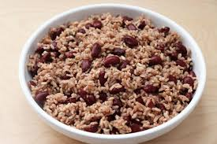

Fluffy Rice and Peas!

This will be my take on nice Fluffy Jamaican Rice and Peas. I hope you enjoy.
Ingredients
Not much is really needed to make the best rice and peas, you just need:
- 2 cups of long grain white rice
- 1 whole dry coconut
- 1 scotch bonnet pepper
- 5 thyme sprigs
- 3 garlic cloves, minced
- 2 teaspoon salt
- 2 scallion, crushed
- 6 pimento berried
- 1 cup dried kidney beans, rinsed, soaked overnight
Directions
- Get your coconut, remove the husk and then peel and blend the cocnout with the water.
- In a large saucepain, cover the beans with water and bring to a boil over moderately high heat. Stir in the scallion, garlic, pimento, thyme, pepper, salt.
- Stir in the coconut milk and bring to a simmer.
- Cover and simmer over low heat until the beans are tender, about 1 hour; adjust heat as necessary to maintain a gently simmer.
- Stir in the rice; cover and simmer over low heat until the rice is tender and the liquid is absorbed, about 30 minutes.
- Remove from heat and let steam for 10minutes, then discard the thyme stems, all spice berries, and scotch bonnet pepper.
- Using a fork, fluff the rice and beans then enjoy make sure you serve it hot.